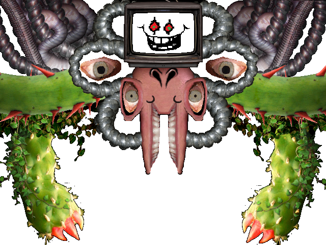

Undertale
______________________________________________
Minecraft PC
_______________________Bosses_______________________ |
|---|
FloweyBoss

Flowey is one of the most mysterious monsters in the game. Through the game you will find out that he once had the ability to reset as you do in the game, but when you come he lost that power. Even though he has lost the power to reset, he is able to remember everything that happens before you reset. If you are trying the full pacifist and you kill the monster guarding the door to exit the ruins on accident, you would want to exit the game and come back to your last save point. When you spare her after accidentally killing her flowey will be on the other side of the door. He will say he knew you killed her but you decided to undo it. Flowey is also the one who shows you how things work underground when you first start, explaining what your soul is and its importance.
Sans
Sans |
In battle |
Sans Eye |
Hit |
|---|---|---|---|
 |
 |
 |
|
Sans is the most sensational AI in the game. This character is known by either two or three things. One being his
puns, in the game he is a jokester who will often make puns in the places you encounter him. Another is his
mysteriousness, there is not much of a background to this character. What we do know he is very powerful, his
parents are gone, and he can remember some things after a reset. Sans is also known for using his so called
shortcuts when he teleports. He is well liked by the other monsters in his hometown snowdin. He and his
brother are guardsman for the royal guard.
His brother, Papyrus, who hates puns, wishes to be hired for the royal guard sohe is always trying to work hard. He loves making puzzles for the human but is not very good at making them work or capturing the human. He is also one of the bosses that if your health reaches near zero, he will stop the battle and send you back instead of killing you. Though Papyrus is very active and focused, sans is not. Sans is also known for being lazy and slacking off, then he uses skeleton-related puns to say how much he has worked.
In doing the genocide mode, you do not see sans after you kill his brother until the room that you fight him at the room before the throne room you will fight him. In this battle sans will talk about how he was studying timelines and he picked up that the timelines were jumping left and right, stopping and starting. Unlike other monsters, when you attack him he dodges them, due to his health being at 1hp and the fact that you, done genocide mode, deal thousands of damage when attacking a boss.
Undyne
Undyne is not much of a mysterious character but is pretty powerful. Undyne is the leader of the royal guard and would not spare the human. Although going through pacifist mode, when you battle her you have to run away. When doing this papyrus will call you and you will stop to answer it, so undyne stops where she was until the call is over then resume chase.
Later you will go to her house with papyrus who she is good friends with Undyne is then provoked by papyrus to befriend you, but she is rough with it. In the end of the visit, Undyne ends up burning her own house down by being violent in cooking pasta. After this she goes to live.
When going through genocide rout, you attack undyne and deal thousands of damage that cuts her in half. Despite being destroyed, her shere own determination causes her to transform into a "god form". In here her health is in the tens of thousans, so you have to actually fight her.
Asgore
Asgore is the second to final boss, he is the king of the underground. Asgore is a gentle monster and regrets having to kill you. He has to kill you because the monsters needs your seventh soul to break the barrier and let the monsters free. Either way you go, be genocide or pacifist or neutral, he will be there at the barrier waiting to try to kill you. When in battle with him, he pulls out a trident and breaks the spare option on your screen making it only possible to fight to advance the battle. When his hp reaches zero, he offers you his soul and you can choose to spare him. Upon doing this through neutral or pacifist mode the first time, flowey will kill him and take the souls and become god.
______________________________________________